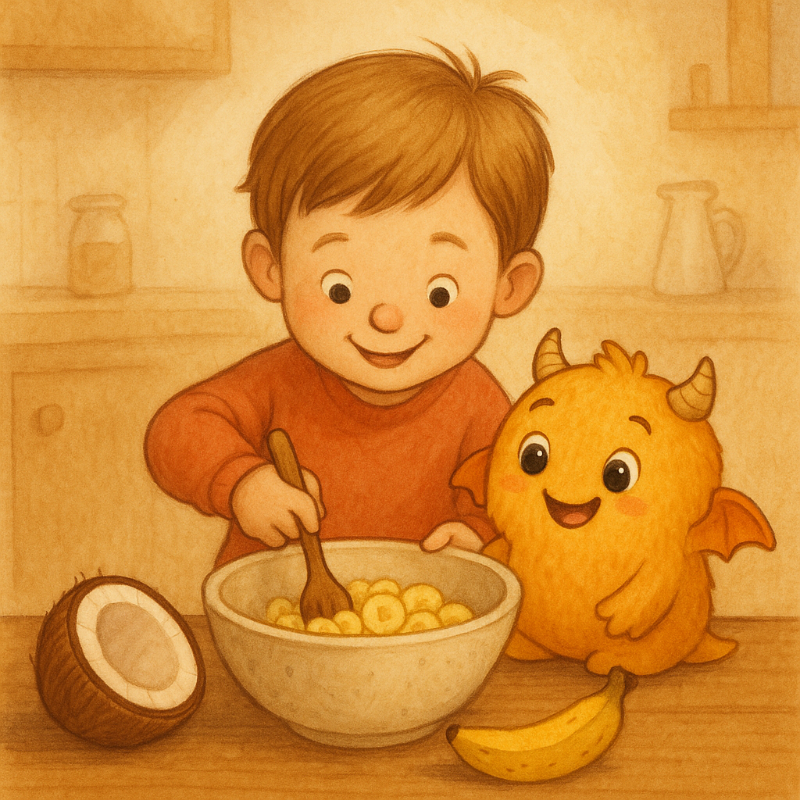

Gipititi und die Kokosnuss
Eine achtsame Gute-Nacht-Geschichte zum Vorlesen
⚠️ Wichtiger Hinweis
Bitte prüfen Sie die Geschichte vor dem Vorlesen individuell, ob sie zu Ihrem Kind passt. Falls Ihr Kind keine Angst im Dunkeln hat oder bestimmte Themen sensibel sind, wählen Sie bitte eine andere Geschichte. Jede Familie ist unterschiedlich – passen Sie das Vorlesen an die Bedürfnisse Ihres Kindes an.
Noël möchte abends noch nicht schlafen – bis aus seiner Kokosnuss ein kleines, warmherziges Wesen hüpft: Gipititi. Gemeinsam zaubern sie Kokos-Bananen-Muffins, verwandeln wuselnde Gedanken in kleine Wölkchen und finden einen liebevollen Weg in eine ruhige, sichere Nacht.
Direkt darunter findest du die gesamte Geschichte als PDF. Außerdem lassen sich Namen individuell anpassen (Bezugsperson & Kindername).
Oder als Bilderbuch mit Wischeffekt: Bilderbuch öffnen
📄 Geschichte als PDF
- 📖 Ganze Geschichte öffnen | ⬇️ Download
- A5-Seiten (einfach drucken) | ⬇️ Download
- A4-Broschüre (falten & heften) | ⬇️ Download
iPad: PDF öffnen → Teilen → Drucken.
📚 Vorlese-Tipps
Praktische Hinweise für eine ruhige, sichere Gute-Nacht-Zeit
Vor dem Vorlesen
- Atmosphäre schaffen: gedämpftes Licht, Handy weg, ruhige Haltung.
- Kurz Bezug nehmen: 1–2 Sätze über den Tag reichen.
- Bezugsperson-Name prüfen, wenn die Geschichte personalisiert ist.
Während des Vorlesens
- Keine Flüsterstimme. Lesen Sie in einer angenehmen, ruhigen Lautstärke.
- Langsam sprechen, kleine Pausen lassen, Blickkontakt halten.
- Kind darf Bilder länger betrachten. Frage: „Möchtest du selbst umblättern, wenn du bereit bist?“
- Geräusche nur am Text orientiert (z. B. „plopp“ der Kokosnuss, Klopfen des Kochlöffels).
Wenn das Kind innehält
- Warten lassen, ruhig atmen, nicht drängen.
- Ritualfrage: „Sollen wir weiterblättern, wenn du bereit bist?“
Nach dem Vorlesen
- Satz zur Sicherheit: „Ich bin da. Jetzt wird’s ruhig.“
- Optional 1–2 offene Fragen („Was hat dir gefallen?“) – keine Prüfungsfragen.
Do’s & Don’ts (kurz)
- Do: ruhig sitzen/liegen, langsam sprechen, lächeln, Pausen lassen, Namen anpassen.
- Don’t: flüstern, hetzen, erschrecken, ablenken (Handy), „erklären statt erzählen“.
Hinweis zur Eignung
- Eltern prüfen vorab, ob die Geschichte fürs eigene Kind geeignet ist; bei sensiblen Themen ggf. pausieren oder eine andere Geschichte wählen.
Namen anpassen (optional)
Noël wusste schon beim Abendessen, dass er eigentlich keine Lust hatte, ins Bett zu gehen …
… dann machte es plopp und die Kokosnuss sprang auf. Heraus kam Gipititi, das ihm hilft, Gedanken in kleine Wölkchen zu verwandeln.
✨ Deine persönliche PDF
Oben Namen (Bezugsperson & Kind) setzen und hier klicken – die Geschichte wird mit deinen Namen als eigene PDF heruntergeladen.